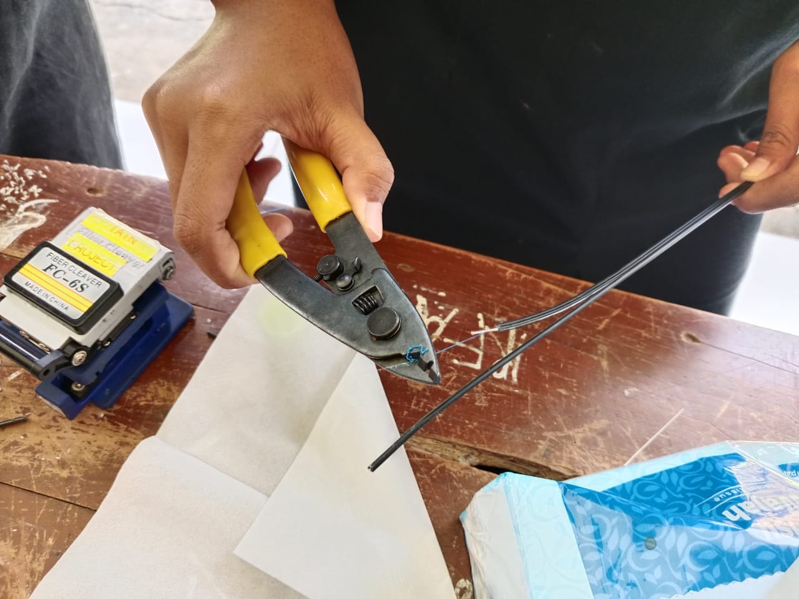
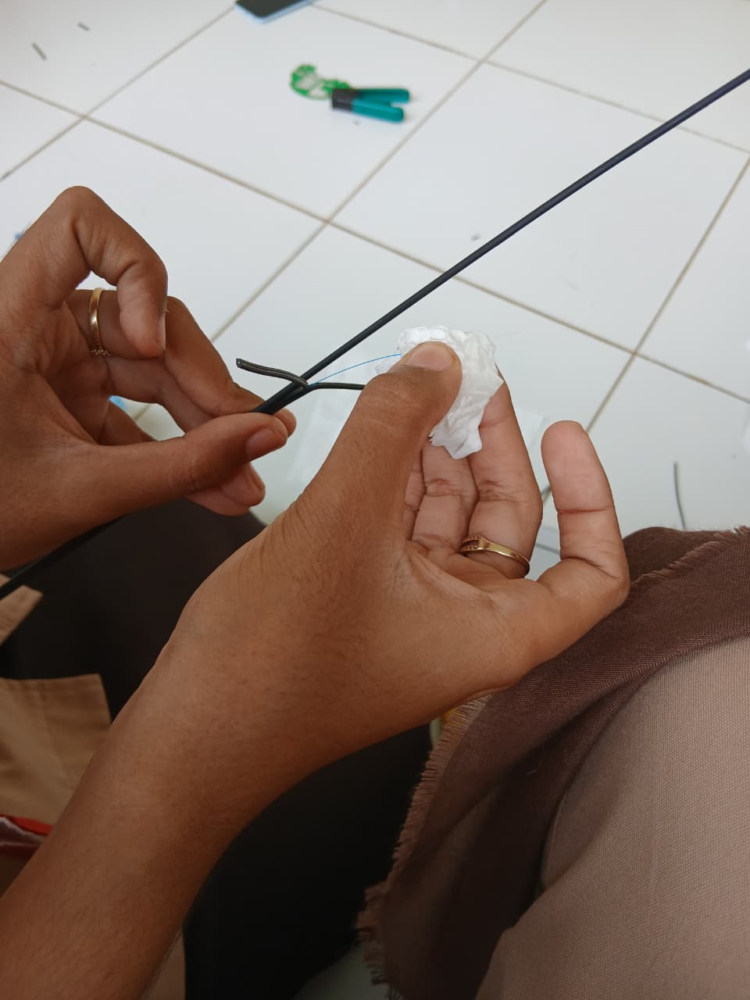
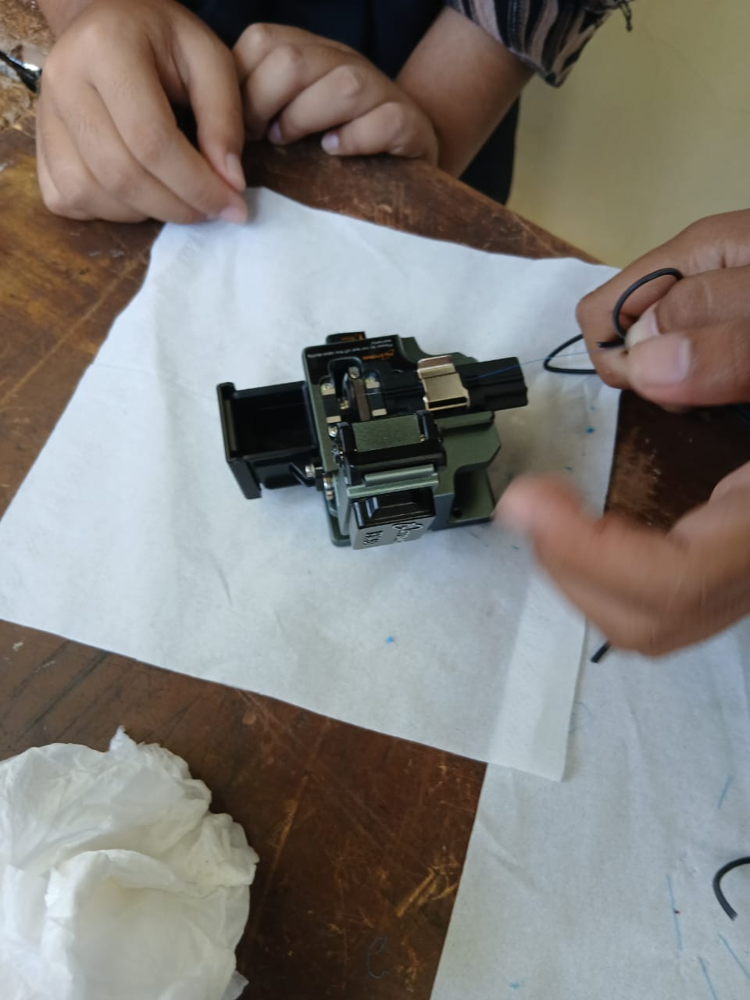
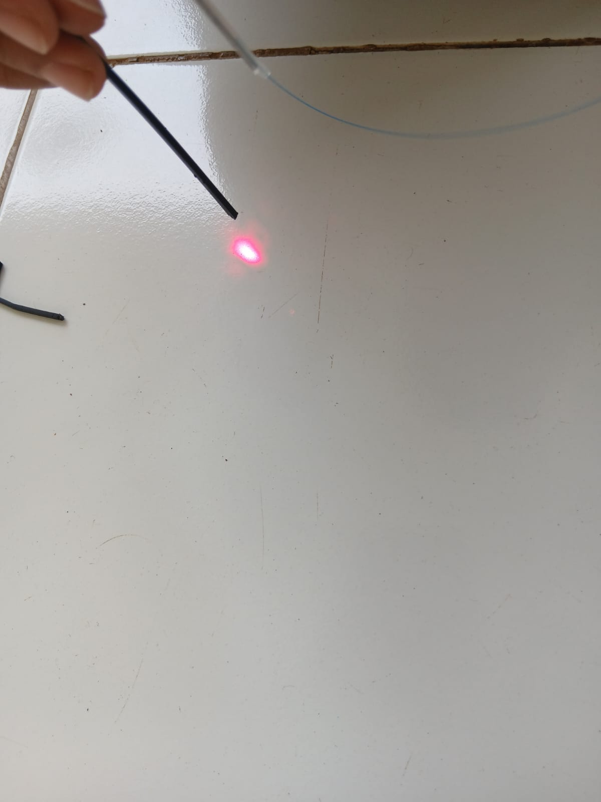

LANGKAH-LANGKAH PENYAMBUNGAN KABEL FIBER OPTIK
Alat dan Bahan

- Kabel fiber optik
- Splicer
- Striper
- Cleaver
- Alkohol
- Tisu
- Smufe
- Miler
- Tang
- Konektor
- Senter VFL
Langkah-langkah
Pengupasan
- dengan outer jaket core
menggunakan striper
Setelah dipisahkan lalu outer jaket core dikupas menggunakan
Miller agar bagian cladding terlihat .lalu dikupas lagi menggunakan stripper agar bagian core terlihat

Pembersihan
- -Bersihkan core yang kotor
dari kotoran dan debu
dengan alkohol dan tisu

Pemotongan
- -Potong core menggunakan cleaver
dengan meletakan fo di cleaver
kemudian sesuaikan cladding di nomor
15. Tutup pengaman lalu potong
dengan mendorong boost.

Pemasangan
- -Setelah dipotong letakan kabel fo di spliccer sesuaikan
core diantara 2 paku.lakukan hal yang sama pada
sebelahnya.
Pasang smufe di salah satu kabel fo. Tekan tombol power untuk menghidupkan splicer
kemudian tekan tombol hijau / reset untuk
menghubungkan 2 kabel fo. Tunggu sampai terhubung
dilayar splicer.
Setelah terhubung keluarkan kabel fo, lalu
sesuaikan stufe untuk menutupi core dari kedua
kabel fo. Lalu panaskan stufe pada bagian
pemanas.lalu dikeluarkan


Pengecekan
- -Setelah selesai pasangkan konektor dengan cara salah satu ujung
dari kabel fo dikupas, kemudian kupas clading agar core terlihat.
bersihkan dengan tisu yang sudah dibasahi alkohol
potong core menggunaka stripper. kemudian buka konektor dan
masukan core kabel hingga ujung konektor
kunci konektor dengan mendorong bagian coklat konektor ke atas
pasang bagian biru konektor lagi sampai kencang
penutup konektor di lepas, isi bagian tersebut di colok pakai leser
senter ketika ujungnya menyala artinya berhasil
